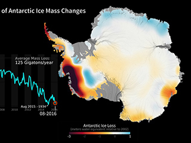
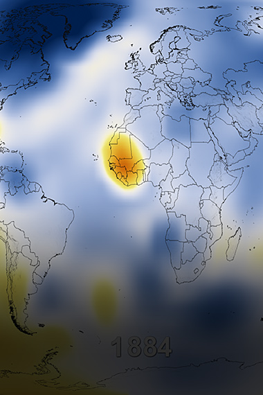

Prevention of global warming
as President Trump recently announced the U.S.'s withdrawal from the Paris Agreement. And despite this reckless move, American mayors, state leaders, county officials, governors, major companies, and millions of citizens across our country have pledged that they're "still in" when it comes to the agreement, and supporting the goal of limiting future warming to well below 2 degrees Celsius.
Even better, a new initiative by former New York City mayor Michael Bloomberg gives the urban layer of this movement a boost. He’s asked mayors from the 100 most populous cities in the country to share their plans for making their buildings and transportation systems run cleaner and more efficiently. The 20 that show the greatest potential for cutting the dangerous carbon pollution that’s driving climate change will share a total of $70 million in technical assistance funding provided by Bloomberg Philanthropies and partners.
It’s important to remember the equally vital contributions that can be made by private citizens—which is to say, by you. “Change only happens when individuals take action,” Aliya Haq, deputy director of NRDC’s Clean Power Plan initiative, says. “There’s no other way, if it doesn’t start with people.”
The goal is simple. Carbon dioxide is the climate’s worst enemy. It’s released when oil, coal, and other fossil fuels are burned for energy—the energy we use to power our homes, cars, and smartphones. By using less of it, we can curb our own contribution to climate change while also saving money. Here are a dozen easy, effective ways each one of us can make a difference:
- >-Speak up!
What’s the single biggest way you can make an impact on global climate change?
“Talk to your friends and family, and make sure your representatives are making
good decisions,” Haq says. By voicing your concerns—via social media or, better yet,
directly to your elected officials—you send a message that you care about the warming world.
Encourage Congress to enact new laws that limit carbon emissions and require polluters to pay
for the emissions they produce. “The main reason elected officials do anything difficult is
because their constituents make them,” Haq says. You can help protect public lands, stop offshore
drilling, and more here.
- Power your home with renewable energy.
Choose a utility company that generates at least half its power from wind or solar and has been certified by Green-e Energy,
an organization that vets renewable energy options. If that isn’t possible for you, take a look at your electric bill; many utilities
now list other ways to support renewable sources on their monthly statements and websites.
- -Weatherize, weatherize, weatherize.
“Building heating and cooling are among the biggest uses of energy,” Haq says. Indeed, heating and air-conditioning account for almost
half of home energy use. You can make your space more energy efficient by sealing drafts and ensuring it’s adequately insulated. You can
also claim federal tax credits for many energy-efficiency home improvements.
- -Invest in energy-efficient appliances.
Since they were first implemented nationally in 1987, efficiency standards for dozens of appliances and products have kept 2.3 billion
tons
of carbon dioxide out of the air. That’s about the same amount as the annual carbon pollution coughed up by nearly 440 million cars.
“Energy
efficiency is the lowest-cost way to reduce emissions,” Haq says. When shopping for refrigerators, washing machines, and other
appliances,
look for the Energy Star label. It will tell you which are the most efficient.
- -Reduce water waste.
Saving water reduces carbon pollution, too. That's because it takes a lot of energy to pump, heat, and treat your water. So take shorter
showers, turn off the tap while brushing your teeth, and switch to WaterSense-labeled fixtures and appliances. The EPA estimates that if
just one out of every 100 American homes were retrofitted with water-efficient fixtures, about 100 million kilowatt-hours of electricity
per year would be saved—avoiding 80,000 tons of global warming pollution.
- -Actually eat the food you buy—and make less of it meat.
Approximately 10 percent of U.S. energy use goes into growing, processing, packaging, and shipping food—about 40 percent of which
just winds up in the landfill. “If you’re wasting less food, you’re likely cutting down on energy consumption,” Haq says. And since
livestock products are among the most resource-intensive to produce, eating meat-free meals can make a big difference, too.
- 
- 